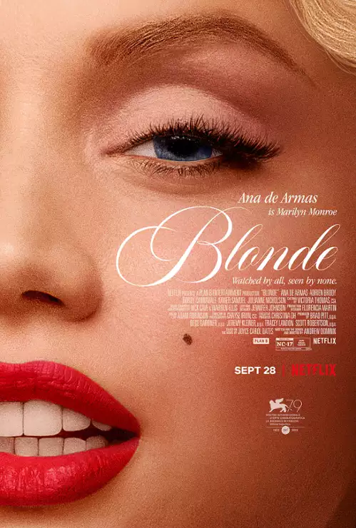
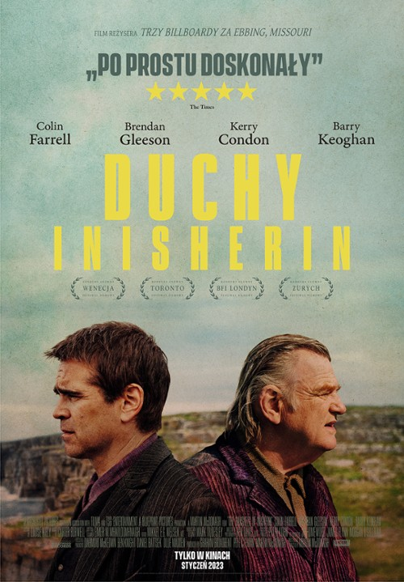

Nominacje i zwycięzcy z 2023 roku
Najgorszy film - wygrana: Blondynka

- Pinokio
- Miłego Żalu
- Córka króla
- Morbius
Najgorszy aktor - wygrana: Jared Leto – Morbius
Pozostałe nominacje:
- Pete Davidson – Pies w rozmiarze XXL
- Machine Gun Kelly – Miłego Żalu
- Tom Hanks – Pinokio
- Sylvester Stallone – Samarytanin
Najgorsza aktorka - wygrana: Ryan Kiera Armstrong - Podpalaczka
Pozostałe nominacje:
- Bryce Dallas Howard – Jurassic World: Dominion
- Diane Keaton – Mack i Rita
- Kaya Scodelario – Córka króla
- Alicia Silverstone – Rekin
Najgorsza aktorka drugoplanowa - wygrana: Adria Arjona – Morbius
Pozostałe nominacje:
- Penélope Cruz – 355
- Bingbing Fan – Córka króla, 355
- Mira Sorvino – Lamborghini: Człowiek, który stworzył legendę
- Lorraine Bracco – Pinokio
Najgorszy aktor drugoplanowy: Tom Hanks – Elvis
Pozostałe nominacje:
- Pete Davidson – Miłego Żalu
- Xavier Samuel – Blondynka
- Evan Williams – Blondynka
- Mod Sun – Miłego Żalu
Najgorszy reżyser - wygrana: Mod Sun, Machine Gun Kelly - Miłego Żalu
Pozostałe nominacje:
- Judd Apatow - Bańka
- Andrew Dominik - Blondynka
- Daniel Espinosa - Morbius
- Robert Zemeckis - Pinokio
Najgorszy aktor drugoplanowy - wygrana: Tom
Najgorszy scenariusz - wygrana: Blondynka – Andrew Dominik
Pozostałe nominacje:
- Pinokio – Robert Zemeckis, Chris Weitz
- Miłego Żalu – Mod Sun, Machine Gun Kelly
- Jurassic World: Dominion – Colin Trevorrow, Emily Carmichael
- Morbius – Matt Sazama, Burk Sharpless
Nagroda Odkupienia - wygrana główna: Colin Farrell – Duchy Inisherin

Pozostałe nominacje:
- Mark Wahlberg – Ojciec Stu
- Val Kilmer – Val
Najgorszy prequel, remake, "zrzynka" lub sequel - wygrana: Pinokio
Pozostałe nominacje:
- Blondynka
- Kolejne 365 dni
- 365 dni: Ten dzień
- Podpalaczka
- Jurassic World: Dominion
Najgorsze combo - wygrana: Tom Hanks i jego obciążona lateksem twarz – Elvis
Pozostałe nominacje:
- Mod Sun & Machine Gun Kelly – Miłego Żalu
- Andrew Dominik – Blondynka (i jego problemy z kobietami)
- Para bohaterów bazująca na prawdziwych postaciach w scenie łóżkowej w Białym Domu - Blondynka
- Kolejne 365 dni
- 365 dni: Ten dzień